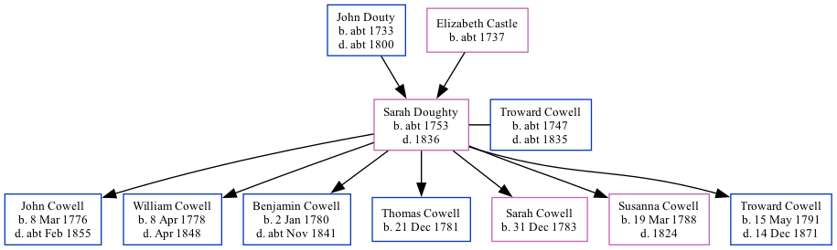

Sarah Cowell (née Doughty) c1753 - 1836 [ Home ] | [ Calendar ] | [ Surnames Index ] | [ Family History ]The child of John Douty and Elizabeth Castle Sarah Doughty , the 4 times great-grandmother of Nigel Horne , was born in Margate, Kent, England c. 17531,2,3 , was baptized there at St John the Baptist Church on Jun 6, 1756 and also married Troward Cowell (with whom she had 7 children: John , William Castle , Benjamin , Thomas , Sarah Elizabeth , Susanna and Troward ) there at St John The Baptist Church, on May 30, 17755 (KFHS CD 28).
She died in 1836 in Margate1,2,3,4 and was buried there at St John the Baptist Church on Mar 7, 1836 (KFHS CD28)6 .
Parents John was born c. 1733Elizabeth was born c. 1737Children John was born on Mar 8, 1776William Castle was born on Apr 8, 1778Benjamin was born on Jan 2, 1780Thomas was born on Dec 21, 1781Sarah Elizabeth was born on Dec 31, 1783Susanna was born on Mar 19, 1788Troward was born on May 15, 1791Citations East Kent Burial Index - Findmypast England Deaths & Burials 1538-1991 - Findmypast England, Select Deaths and Burials, 1538-1991 Ancestry.com Operations, Inc. Public Member Trees Online publication - Provo, UT, USA: The Generations Network, Inc., 2006.Original data - Family trees submitted by Ancestry members.Original data: Family trees submitted by Ancestry members. England Marriages 1538-1973 - Findmypast Kent Burials - Findmypast Media Canterbury Marriages - GBPRS/CANT/M/97111462/2 England Marriages 1538-1973 - R_848615599/2 England Marriages 1538-1973 - R_848615334/2 Kent Burials - GBPRS/CANT/D/95168174 England Deaths & Burials 1538-1991 - R_276589148 East Kent Burial Index - GBPRS/D/407025746/1 Family Tree Interactive Map
Map
Generated by ged2site . Last updated on Feb 18, 2025